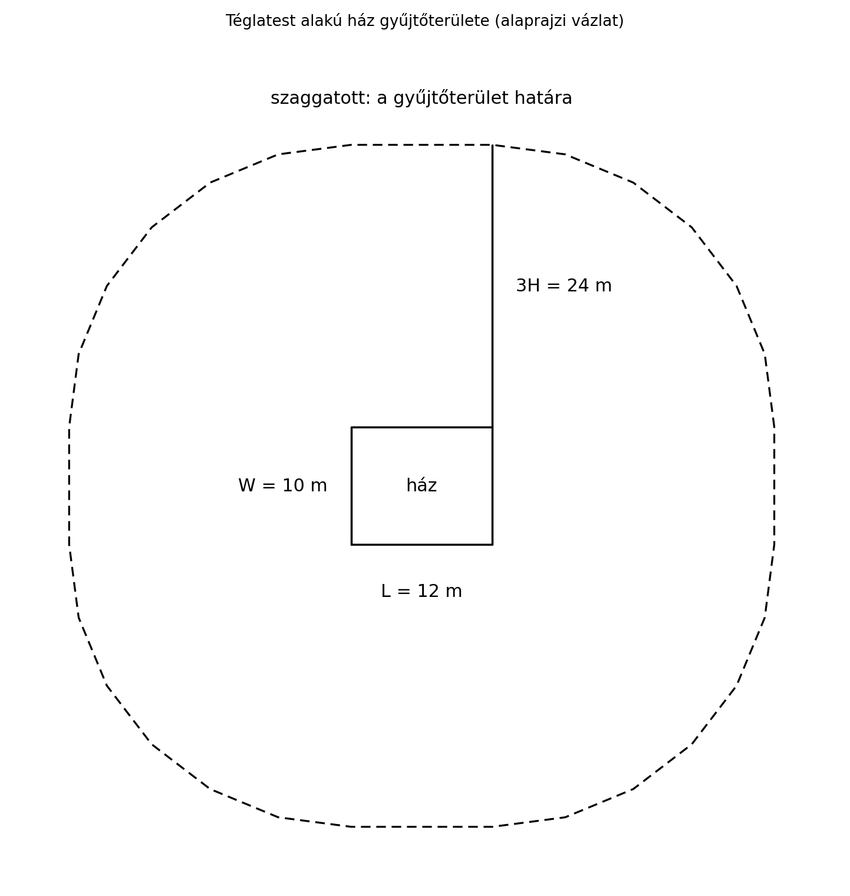

![Két panel. Bal oldalt 0–60 µs: a szaggatott 8/20 µs-os görbe kb. 12 µs-nál éri el a csúcsot és 40 µs-ra szinte nullára csökken; a vastag folytonos 10/350 µs-os görbe 15–25 µs között fut fel, és 60 µs-nál még a csúcs 95 százalékán van. A 10, 50 és 90 százalékos szint szaggatott vízszintes vonal, a homlokidő nyíllal: 8,0 µs, illetve 10,0 µs. Jobb oldalt 0–1000 µs: a 10/350 µs-os görbe kb. 357 µs-nál csökken a felére, 1000 µs-nál még a csúcs 12 százaléka; a 8/20 µs-os görbe már 50 µs után nulla. Szövegdoboz: 100 kA csúcsáramnál a 10/350-es hullám töltése kb. 50 C, fajlagos energiája 2,56 MJ/Ω, a 8/20-asé 1,75 C és 0,12 MJ/Ω.](figures/img/ve082-1.png)
Statikus változat (mint a PDF-ben)
Egy kivitelező vagy karbantartó villanyszerelő gyakran találkozik olyan megrendeléssel, amelyben egy családi ház, műhely vagy ipari csarnok villámvédelmét kell kiépíteni vagy felülvizsgálni. Ilyenkor nem elég „felszerelni egy villámhárítót”; előbb azt kell tisztázni, hogy egyáltalán szükséges-e a védelem, milyen védelmi szintet kell választani, és milyen hatások ellen kell védekezni. Ha ezeket az alapfogalmakat nem érted, akkor könnyen előfordul, hogy a berendezés papíron megvan, de a villámcsapás mégis tönkreteszi a beépített elektronikát, vagy éppen feleslegesen drága rendszert építesz. Ez a fejezet ezért a villám természetét, a kockázatértékelés alapgondolatát és a védelmi osztályok jelentését tanítja meg, mielőtt a konkrét szerelési megoldásokra rátérnénk.
Képzelj el egy nyári zivatart. A felhő alsó része negatív töltésűvé válik, a talaj pedig pozitív töltést vesz fel. Amikor a feszültség a felhő és a talaj között eléri a levegő átütési szilárdságát, egy előkisülés (lépcsős vezető) indul el a felhőből a föld felé, majd amikor közel ér a talajhoz, a talajból egy ellenirányú, csatlakozó kisülés indul felé. Amikor a kettő összeér, a kialakult csatornán lefut a nagy fény- és hőjelenséggel járó főkisülés (visszacsapás); ezt nevezzük villámcsapásnak. A villám nem egyetlen áramimpulzus, hanem gyakran több, gyorsan egymást követő részütésből áll. Az áram csúcsértéke tipikusan tízezres amper nagyságrendű, a kisülés időtartama pedig a milliszekundum tört része. Az épület és a benne lévő villamos berendezés szempontjából nemcsak a közvetlen becsapás veszélyes, hanem az is, ha a villám a közelben csap le, és elektromágneses tér vagy a földpotenciál megemelkedése révén károsít.
A villámvédelmi tervezés során ezt a folyamatot – a kisüléstől a közvetlen és a közvetett hatásokig – kell végiggondolnunk: hol tudjuk a villámáramot felfogni, elvezetni, és hol tudjuk a káros hatásokat korlátozni. Ehhez tudnunk kell, milyen alakú az az áramimpulzus, amelyet a védelemnek el kell viselnie. A szabványok a villámáramot és a vezetékekbe indukált túláramot két jellegzetes vizsgálati hullámformával írják le; az alábbi ábra ezeket mutatja azonos csúcsáramra normálva.
Hogyan olvasd az ábrát? A hullám nevének első száma a homlokidő (): a felfutás 10 %-os és 90 %-os pontján át húzott egyenes alapján, szerint számolt látszólagos felfutási idő. A második szám a félérték-idő (): ennyi idő telik el a látszólagos kezdőponttól addig, amíg a hát a csúcsérték felére csökken. A (b) panelen jól látszik a lényeg: a 8/20 µs-os impulzus 50 µs után gyakorlatilag lezajlott, a 10/350 µs-os viszont 1 ms múlva is folyik. Azonos, 100 kA-es csúcsáram mellett a 10/350-es hullám töltése () kb. 50 C, a 8/20-asé kb. 1,75 C (kb. 29-szeres különbség), a hőhatásért felelős fajlagos energia () pedig 2,56 MJ/Ω, illetve 0,12 MJ/Ω (kb. 21-szeres különbség) – a görbékből numerikus integrálással számolt értékek. A csúcsáram tehát önmagában nem jellemzi a terhelést: a töltés és az energia egy nagyságrenddel nagyobb a közvetlen villámáramot utánzó hullámnál. Ezért megy tönkre a csak 8/20 µs-os árammal vizsgált T2 típusú túlfeszültség-levezető (SPD), ha közvetlen villámáram rész-árama jut rá, és ezért kell a villámáramnak kitett betáplálásra 10/350 µs-os árammal vizsgált T1 típusú SPD; ezt a Túlfeszültség-védelmi eszközök (SPD): típusok és beépítés alfejezet 3. feladata alkalmazza. (A görbék modellek: a 10/350-es Heidler-függvény, a 8/20-as alakú közelítés; a paraméterek ellenőrizendők: MSZ EN 62305-1, MSZ EN 61000-4-5.) A HTML-kiadásban a csúcsáram és az időtartomány állítható: figyeld meg, hogy kétszeres csúcsáram kétszeres töltést, de négyszeres fajlagos energiát jelent.
Definíció. A villám a légkörben lejátszódó, nagy energiájú elektromos kisülés, amely zivatarfelhők és a földfelszín, illetve felhőrészek között jön létre. A minket elsősorban érdeklő földbe csapó villám esetén a kisülés a felhő és a talaj között megy végbe.
A keletkezés lényege: a zivatarfelhőben jég- és vízrészecskék ütköznek, eközben töltések válnak szét. A felhő alsó része jellemzően negatív, a felső része pozitív töltésű lesz. A talaj a felhő alatt pozitív töltést vesz fel. A felhő és a talaj közötti feszültség akár több száz millió volt is lehet, de a levegő szigetelési képessége miatt a kisülés csak akkor indul meg, ha a térerősség eléri a levegő átütési szilárdságát. Ekkor alakul ki a csatorna, amelyen a főkisülés lefolyik.
A villámáramot néhány jellegzetes paraméterrel írjuk le:
Ezek az értékek azért fontosak, mert a védelmi eszközöket és a vezetőket ezekre a terhelésekre kell méretezni. Egy vékony, rosszul méretezett levezető a villámáramot nem képes elvezetni: megolvadhat, szétrobbanhat, és maga is tüzet okozhat.
Definíció. A villámvédelmi osztály (LPL, Lightning Protection Level) a villámvédelmi rendszer tervezéséhez használt, I-től IV-ig terjedő kategória, amely meghatározza a védelem ellenálló képességét a villámáram nagyságával és hatásaival szemben. Az LPL I a legmagasabb védelmi szint, az LPL IV a legalacsonyabb.
Definíció. A villámvédelmi zóna (LPZ, Lightning Protection Zone) az épület vagy tér olyan, a villám elektromágneses hatása szempontjából meghatározott része, ahol a villámáram és az elektromágneses tér jellemzői eltérőek. Az LPZ 0A a közvetlen becsapásnak kitett külső zóna, az LPZ 0B a közvetlen becsapástól védett, de az elektromágneses térnek kitett zóna; az LPZ 1, 2 stb. a belső, egyre jobban árnyékolt zónák. A zónák térbeli elhelyezkedését, a közös belépési pontot és az SPD-k helyét egy családi ház metszetén a Túlfeszültség-védelmi eszközök (SPD): típusok és beépítés alfejezet LPZ-ábrája mutatja.
A villám káros hatásait két nagy csoportra osztjuk: közvetlen és közvetett hatások.
Ha a villám közvetlenül az épületbe vagy a villamos berendezésbe csap, a következő hatások léphetnek fel:
A villám akkor is károsíthat, ha nem közvetlenül az épületbe csap, hanem a közelben:
A villámvédelem szükségességét és mértékét a szabvány szerinti kockázatértékeléssel kell meghatározni. A kockázat annak a mértéke, hogy a villámcsapás milyen éves szintű kárt okozhat.
Alapösszefüggés. A kockázat kiszámítható a veszélyes események számának (), a károsodás valószínűségének () és a veszteség mértékének () szorzataként:
A valóságban a szabvány ezt több kockázati komponensre bontja, és az egyes komponenseket külön-külön kell összegezni. Az alapgondolat azonban ugyanaz: minél gyakrabban csap a villám, minél nagyobb a károsodás valószínűsége, és minél nagyobb a veszteség, annál nagyobb a kockázat, és annál indokoltabb a villámvédelem.
A veszélyes események számát az épület gyűjtőterülete és a villámsűrűség határozza meg. A gyűjtőterület azt a földfelületet jelenti, ahonnan a villám „összegyűjthető” az épületre. Egy téglalap alaprajzú épület gyűjtőterülete közelítőleg az épület alaprajzi területe, plusz a magassággal arányos környező sáv területe. Az elvet előbb egy adott gyűjtőterülettel szemléltetjük, majd lentebb a téglatest alakú épületre vonatkozó képlettel ki is számítjuk (a pontos eljárás a szabványban van).
Számítás. Tegyük fel, hogy egy családi ház gyűjtőterülete , és a villámsűrűség villámcsapás -enként évente. Az éves veszélyes események száma:
Mivel ,
Ez azt jelenti, hogy átlagosan 250 évente egyszer csap a házba villám. Önmagában ez nem tűnik nagy számnak, de ha a házban nagy értékű elektronika vagy éghető anyag van, illetve ha emberek tartózkodnak ott, a kockázat elfogadhatatlan lehet.
A károsodás valószínűsége () attól függ, hogy milyen védelmi intézkedések vannak. Ha van külső villámvédelem, a közvetlen becsapás okozta fizikai kár valószínűsége csökken; ha van belső túlfeszültség-védelem, az elektronikus károk valószínűsége csökken. A veszteség () pedig attól függ, hogy mi a védendő érték: emberélet, szolgáltatás, kulturális örökség vagy gazdasági érték.
Szabvány. A létesítési kötelezettséget a hazai tűzvédelmi jogszabály (OTSZ) és a Villámvédelem tűzvédelmi műszaki irányelv határozza meg; a kockázatértékelés és a villámvédelmi felülvizsgálat erre jogosult szakember feladata (ellenőrizendő: hatályos OTSZ, TvMI és jogosultsági szabályok). A villámvédelmi kockázatértékelést Magyarországon az MSZ EN 62305 szabványsorozat írja le. A sorozat 1. része az általános elveket, 2. része a kockázatkezelést, 3. része az épületek fizikai károsodása és életveszély elleni védelmét, 4. része az épületek villamos és elektronikus rendszereinek védelmét tárgyalja. A pontos számítási képleteket és paramétereket a szabvány aktuális kiadása tartalmazza; az itt megadott összefüggések a gondolkodásmódot szemléltetik. (ellenőrizendő: aktuális szabványkiadás és a gyűjtőterület képlete)
Összefüggés (különálló, téglatest alakú épület; ellenőrizendő: MSZ EN 62305-2):
ahol és az alaprajzi hossz és szélesség, a magasság (m). Az épület körül egy széles sáv „gyűjti” a villámot: az oldalak mentén téglalapok, a sarkoknál negyedkörök, amelyek együtt egy teljes kört adnak.

Összefüggés. A közvetlen becsapásból eredő veszélyes események éves száma:
ahol m²-ben, villám/(km²·év) egységben értendő, a helyelhelyezkedési tényező (ellenőrizendő: MSZ EN 62305-2 táblázata):
| Az épület helyzete | |
|---|---|
| magasabb objektumokkal körülvéve | 0,25 |
| azonos vagy alacsonyabb objektumokkal körülvéve | 0,5 |
| különálló | 1 |
| különálló, dombtetőn | 2 |
A kockázatértékelés eredménye alapján a szabvány meghatározza, hogy milyen villámvédelmi osztályt (LPL) kell választani. Az LPL I–IV osztályok a villámvédelmi rendszer méretezéséhez szükséges paramétereket rögzítik:
A szabvány szerinti tanult értékek (ellenőrizendő: MSZ EN 62305-1 és -3):
| LPL | legnagyobb csúcsáram | legkisebb csúcsáram (felfogás) | gördülőgömb-sugár |
|---|---|---|---|
| I | 200 kA | 3 kA | 20 m |
| II | 150 kA | 5 kA | 30 m |
| III | 100 kA | 10 kA | 45 m |
| IV | 100 kA | 16 kA | 60 m |
Az LPL tehát a méretezési (legnagyobb) és a felfogáshoz tartozó legkisebb csúcsáramot is meghatározza. Az LPL meghatározza például:
Minél szigorúbb a védelmi szint (LPL IV → LPL I irányban), annál több anyagot és szigorúbb kialakítást igényel a rendszer, de annál nagyobb áramot képes elvezetni. A döntést tehát mindig a kockázatértékelés alapján, a szabvány szerint kell meghozni.
Magyarországon a villámcsapások éves sűrűsége jellemzően villám -enként évente, de ez a szám területtől és időjárási viszonyoktól függően változhat. (ellenőrizendő: aktuális hazai villámsűrűségi adat, például meteorológiai vagy szabvány szerinti térkép alapján) A pontos értéket a villámvédelmi tervezéshez a szabvány melléklete vagy a meteorológiai szolgálat adatai alapján kell meghatározni.
A védelem szükségességét nem lehet pusztán a villámsűrűségből levezetni. Egy külterületi, egyszintes, éghetetlen anyagú épületnél a kockázat általában kicsi; egy sűrűn lakott, sok elektronikát tartalmazó, éghető tetőszerkezetű épületnél viszont ugyanolyan villámsűrűség mellett is indokolt lehet a védelem. Ezért a döntés mindig kockázatértékeléssel történik.
Új háznál, felújításnál vagy „a villám elvitte a tévét” panasznál ezt a sorrendet kövesd. A jogosultsági és jogszabályi állítások mind (ellenőrizendő: hatályos OTSZ, TvMI, jogosultsági rendelet).
| Szerelő teheti | Tervező feladata | Felülvizsgáló feladata |
|---|---|---|
| felmérés, kérdések, előzetes becslés tájékoztatásként; a terv szerinti szerelés; SPD és EPH a szakképesítése szerint | kockázatértékelés, LPL-választás, villámvédelmi terv | a kész rendszer felülvizsgálata, mérése, minősítése, jegyzőkönyv |
(A szerepkörök határa jogosultsági kérdés, ellenőrizendő: hatályos jogosultsági rendelet, OTSZ.)
Egy villanyszerelőt megbíznak egy régi családi ház villámvédelmének felülvizsgálatával. A házban egy modern hűtő-, fűtés- és szórakoztatóelektronikai rendszer van, és a tulajdonos attól tart, hogy egy közeli villámcsapás tönkreteszi a berendezéseket. A szerelő először felméri az épületet: a tetőn nincs felfogó, a levezető hiányzik, a földelő rendszer ismeretlen. Előzetes becslést végez, és megállapítja, hogy a gyűjtőterület és a helyi villámsűrűség alapján az éves veszélyes események száma (a levezetést lásd fent, a gyűjtőterület kidolgozott 1. példájában: a Mintaházzal azonos méretű, különálló ház mellett). A károsodás valószínűségét a meglévő hiányos védelem miatt magasra becsüli. A kockázat valószínűleg meghaladja az elfogadható szintet, ezért javasolja, hogy a tulajdonos villámvédelmi tervezővel végeztesse el a hivatalos kockázatértékelést; a terv alapján külső villámvédelem épülhet (például LPL III szerint), és javasolja a belső túlfeszültség-védelem (SPD-k) beépítését a főelosztóba és az érzékeny fogyasztók elé. A tulajdonos először csak az SPD-t akarta volna megrendelni, de a szerelő elmagyarázza, hogy a közvetlen becsapás ellen az SPD önmagában nem elég, mert a hő- és mechanikai hatások a tetőt is károsíthatják, és a villámáram a belső vezetékekre is átjuthat.
Ebből az esetből látszik, hogy a szerelőnek ismernie kell a villám hatásait és a védelmi osztályok szerepét, különben hibás döntést hoz.
„A túlfeszültség-védő eszköz (SPD) önmagában is elég.” Ez a leggyakoribb félreértés. Az SPD a belső villámvédelem része, amely a vezetékeken érkező túlfeszültség ellen véd, de a közvetlen becsapás hő- és mechanikai hatásai ellen nem. A teljes védelemhez külső villámvédelem és megfelelő földelés is kell.
„Ha a földelési ellenállás kicsi, akkor biztonságos.” Önmagában a kis földelési ellenállás csökkenti a potenciálemelkedést, de a lépés- és érintési feszültséget csak a potenciálkiegyenlítéssel és a megfelelő zónakialakítással lehet elfogadható szintre hozni.
„Nincs szükség villámvédelemre, mert nálunk ritkán csap villám.” A ritkaság nem jelenti a kockázat hiányát. A kockázatot a gyakoriság, a károsodás valószínűsége és a következmény súlyossága együtt határozza meg. Egy ritka, de nagy kárú esemény is indokolhat védelmet.
„A villámvédelmi osztályt a ház nagysága alapján választom.” A védelmi osztályt nem az épület mérete, hanem a kockázatértékelés eredménye határozza meg. Egy kis, de robbanásveszélyes épület lehet LPL I, míg egy nagy csarnok lehet LPL III.
Gyakorlás: ennek az alfejezetnek a kidolgozott példái, gyakorlatai és megoldással ellátott feladatai az Összefoglaló feladatgyűjtemény villanyszerelő tanulóknak című kötet 23.1 szakaszában találhatók.
A villám a légkörben lezajló, nagy energiájú elektromos kisülés. Földbe csapó villám esetén a csúcsáram jellemzően több tízezer amper, a töltés több coulomb, a fajlagos energia természetes villámoknál jellemzően nagyságrendű; a méretezési érték LPL I-nél (10 MJ/Ω) (ellenőrizendő: MSZ EN 62305-1). A villám hatásai lehetnek közvetlenek (hő, mechanikai, szikraképződés) és közvetettek (indukált túlfeszültség, földpotenciál-emelkedés, lépés- és érintési feszültség). A védelem szükségességét és mértékét kockázatértékeléssel kell meghatározni; a kockázat alapgondolata: , ahol a veszélyes események száma, a károsodás valószínűsége, a veszteség mértéke. A számításhoz az épület gyűjtőterületét és a helyi villámsűrűséget ismerni kell. A kockázatértékelés eredménye alapján választjuk meg a villámvédelmi osztályt (LPL I–IV), amely a villámvédelmi rendszer valamennyi elemének méretezését meghatározza. Magyarországon a villámsűrűség jellemzően villám//év, de a pontos adatot a szabvány vagy meteorológiai forrás alapján kell ellenőrizni. A továbbvitt eredmény: a villámvédelmi osztály (LPL) és a hozzá tartozó paraméterek elengedhetetlenek a Külső és belső villámvédelmi rendszer alfejezetben tárgyalt felfogó-, levezető-, földelő- és túlfeszültség-védelmi elemek méretezéséhez. A szabvány: MSZ EN 62305.